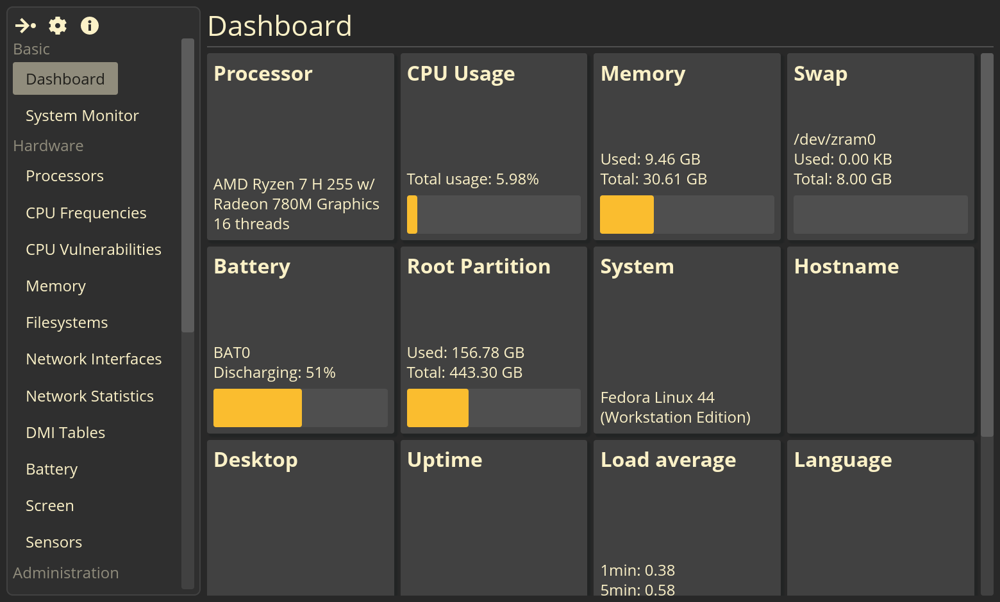
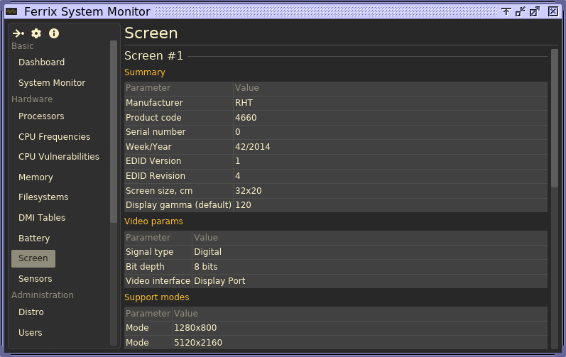
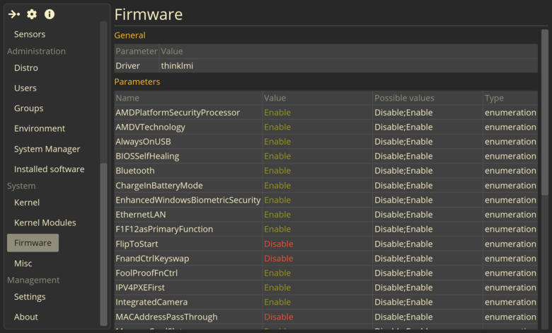
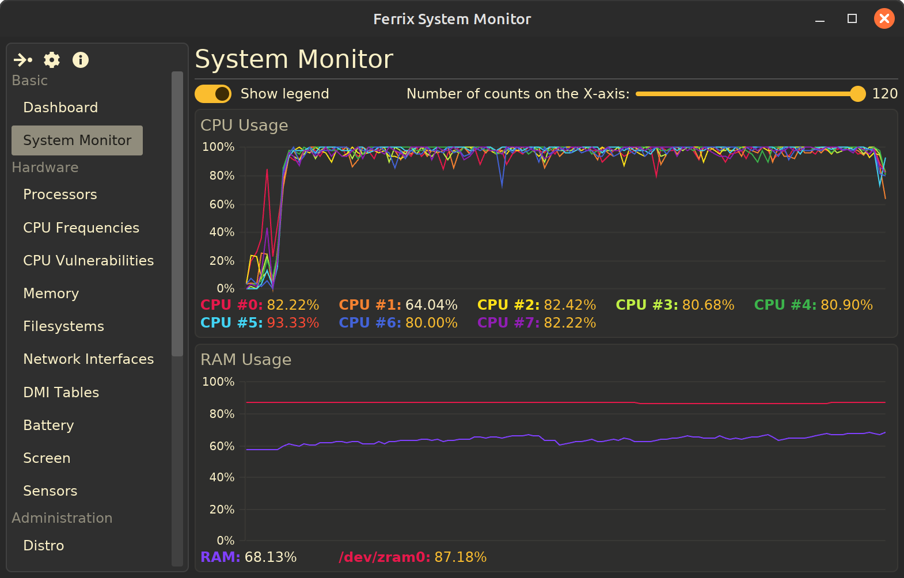

FSM — Swiss Army Knife for Linux hardware diagnostics
[Home] I [Latest version] I [GitHub] I [Donate] I [Download] I [Screenshots] I [Documentation]
FSM is a simple system profiler for modern Linux distributions. It is a program that displays information about a computer's software and hardware. It is designed for modern Linux systems.
Actual FSM version: .
Compatible with Debian version 11 and later, Ubuntu version 22.04 and later, and Fedora 42 and later. It may also work with other Linux distributions released in 2022 or later.
If you arrived at this page via a modern search engine (Google, Yandex, etc.), please read this article for detailed information about the project before reading the rest of the content on this page.

The FSM interface is divided into two part: the left side of the window contains a sidebar with options for selecting which page to display, while the right side displays the actual content associated with that page. The home page is System Passport (Dashboard), which displays key system information in the form of cards. Clicking on each card opens the corresponding page with more detailed information. The home page is designed to provide an overview of the system's current status.
Unlike Hardinfo and similar tools, FSM displays almost everything in the form of table-based panels. Many tables are dynamically updated as the metrics they contain change. You can copy text from these tables — click on the desired cell to copy its contents to the clipboard.
The development of FSM has focused on supporting modern technologies. The program can display a list of systemd services currently running. Integration with this system manager is still far from complete — I plan to add a number of additional systemd-related features in the near future. However, this does not mean that FSM is strictly dependent on systemd; it can also run on systems without it. Furthermore, FSM is one of the few programs capable of displaying UEFI settings.
To access the system's health over time, use the CPU and RAM utilization charts. They are updated in real time. At the bottom of each chart is a legend with color-coded indicators: white text indicates normal usage, yellow indicates high but not critical usage, and red indicates resource usage exceeding 95%.Error text:
[ferrix-polkit] Non-zero return code:
ERROR: ld.so: object 'libapprun_hooks.so' from LD_PRELOAD
cannot be preloaded (cannot open shared opkect file): ignored.
Error executing /home/${USER}/.local/bin/ferrix-polkit:
No such file or directoryTo fix this error, download the correct ferrix-polkit and place it in the appropriate directory:
wget https://github.com/mskrasnov/FSM/releases/download/v0.7.1/ferrix-polkit
chmod +x ./ferrix-polkit
mkdir -pv ~/.local/bin
mv -v ./ferrix-polkit ~/.local/bin/
I'm developing this program on my own in my free time between studying and working, without reveiving any payment for it. If you like my program or want to thank me, you can contribute whatever you can to its development and support by sending any amount to Boosty or to my bank card (if you're from Russia).
Boosty: @mskrasnov
Банковская карта: Сбербанк (Россия) 2202 2062 5233 5406


{kind=link}